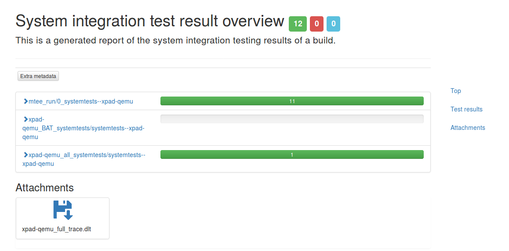
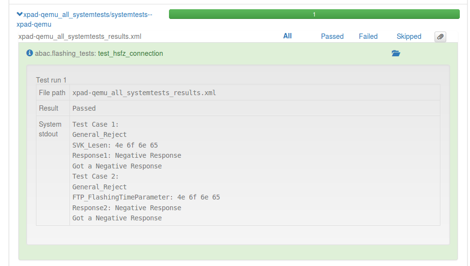

Test documentation and reporting¶
Metadata for tests¶
As defined in attributes_best_practices tests can have different attributes. This adds metadata to the test cases. Depending on the type of test it might be mandatory to define some of these metadata items.
| Example: |
|---|
# Copyright (C) 2015. BMW Car IT GmbH. All rights reserved.
from nose.tools import assert_regexp_matches
from mtee.testing.support.target_share import TargetShare
from mtee.testing.tools import metadata, target_extract, assert_process_returncode
# test needs a target for execution
target = TargetShare().target
@metadata(testsuite=["BAT", "domain", ],
component="dummy",
teststage="integration",
test_case_id="some id",
testtype="functional",
test_description="""This test class verifies:
- nothing
- more nothing""")
class TestTargetSystem(object):
def test_example(self):
pass
@metadata(test_description="""This test case verifies:
- some more nothing
- even more nothing""")
def test_other_example(self):
pass
Metadata for Google Tests scripts¶
When using mtee.testing.tools.gtests_run, metadata can be added to Google Test scripts by using the RecordProperty option:
RecordProperty("key", "property");
To be recognized as metadata entry, the key has to start with metadata. followed by the metadata
tag. If a key has more than one value the values have to be given as comma separated list, e.g.
RecordProperty("metadata.key", "Prop1, Prop2, Prop3");. Nested metadata is defined by a dot joined
string as key, e.g. RecordProperty("metadata.sub1.sub2.key", "Prop");.
| Example: |
|---|
TEST(theta, Negative){
RecordProperty("metadata.testsuite", "BAT, domain");
RecordProperty("metadata.component", "dummy");
RecordProperty("metadata.teststage, "integration");
RecordProperty("metadata.domain", "onedomain");
RecordProperty("metadata.test_case_id", "some id");
EXPECT_EQ(-1, theta(-33));
}
Test documentation in reports¶
Test reports created from xTEE test runs will have the metadata in the reports.
| Example for text only reports: | |
|---|---|
Testsuite: sdktests|systemtests--vmwx86
Tests run: 2, Failures: 0, Errors: 0, Skipped: 0
--------- ----------- ---------
Testcase: BAT.mytest.TestTargetSystem.test_example took 0.000
testsuite: ['BAT', 'domain']
test_description: This test class verifies:
- nothing
- more nothing
domain: onedomain
component: dummy
teststage: integration
test_case_id: some id
Best practices for other attributes to be used with tests¶
Test cases can have many different attributes. These can be used to define filters that will only execute matching test cases. Some best practices on attribute usage are given here.
- Component
Attribute
componentshould be set to the component tested by the test case. For multiple components a list can be used (component=["component1", "component2"]). Component should be equal to the name of the package that provides the component (${BPN}in BitBake, contact the responsible Domain Integrator if unsure).
- Domain
Attribute should contain the domain the component under tests belongs to. E.g.
domain="SWINT".
- Duration
Attribute
durationcould be used to label tests that take long, or mark the short ones. E.g.duration="long"orduration="short".
- Priority
Specify a numeric priority level for the test case. E.g.
priority=0for the highest priority. Test cases with lower priorities get higher numbers.
- Test stage
Attribute
teststageshould be used to define the test stage. Possible values:teststage="module"teststage="integration"teststage="system"teststage="regression"
- Test suite
Attribute
testsuitecan also be used with values other thanBATordomain. E.g. a tester could define astresstest suite.
- Test type
Attribute
testtypeis used to define the type of test. Possible values:testype="functional"testype="performance"testype="stress"
| Example: |
|---|
@metadata(testsuite=["Dummy"],
component="common-api-c++",
domain="AAS",
duration="short",
priority=1,
teststage="integration",
test_description="This is the integration test for CommonAPI-C++ bindings")
def test_integ_capi_dbus():
pass
Test results reporting¶
The option –result-dir allows to define the folder we we want the test results to be saved. Here we will see:
The output log of qemu in case of test run against the virtualized device.
Report of test execution in xml format.
Report of execution in html format. This can be opened in the browser, to have a more understandable report.
 